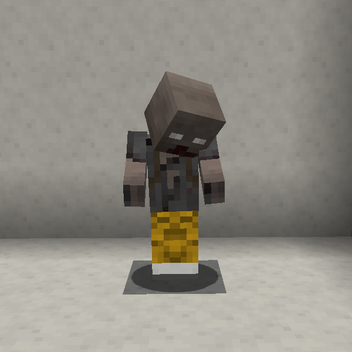
Comum
A base da horda. Lento, mas nunca sozinho.

Zumbis que ouvem, farejam e comem os mortos. Um corpo que sangra, quebra e infecciona. Médicos, soldados, mecânicos e sobreviventes num mundo que reage a cada escolha.
AlphaEm fase alpha: texturas e mecânicas podem ser modificadas, e novas mecânicas ainda vão surgir.
Eles não sabem onde você está. Eles veem, ouvem e farejam, e decidem o que fazer com o que sentiram. Esconder-se, distrair e fugir funcionam de verdade.
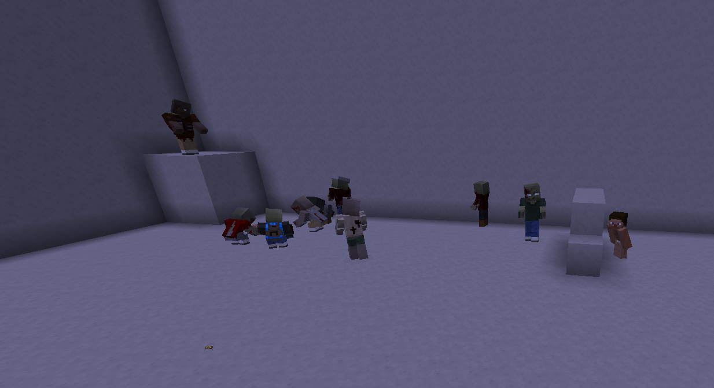
Cada zumbi vaga, investiga o que chamou sua atenção, persegue quando tem certeza, procura onde te viu pela última vez e, se não acha, desiste. Sinais fracos se somam: um barulho sozinho pode não bastar; barulho, cheiro e um vulto, sim.

No escuro e agachado você passa despercebido.

Vidro quebrando vira a cabeça de todos.

Cada arma tem seu alcance de som. Silenciador faz diferença.
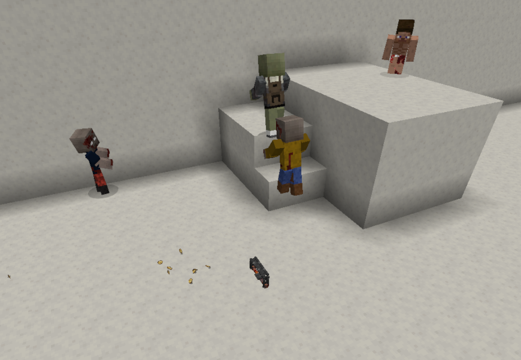
Quem sangra deixa uma trilha. Carne crua na mochila também cheira.
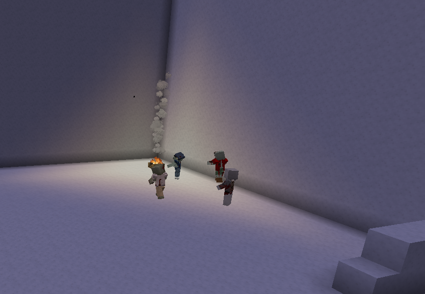
Cidades iluminadas enchem; florestas escuras esvaziam.
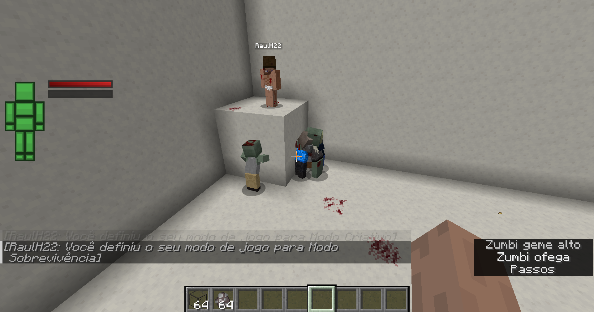
Rosnado, ofego, mastigar: dá para saber o que fazem sem ver.
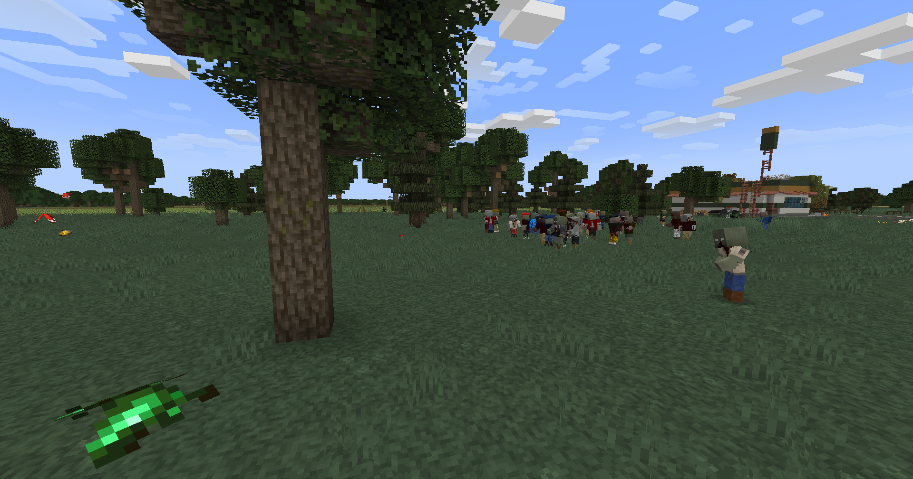
Um barulho forte junta vários zumbis: um vira líder e o resto segue.
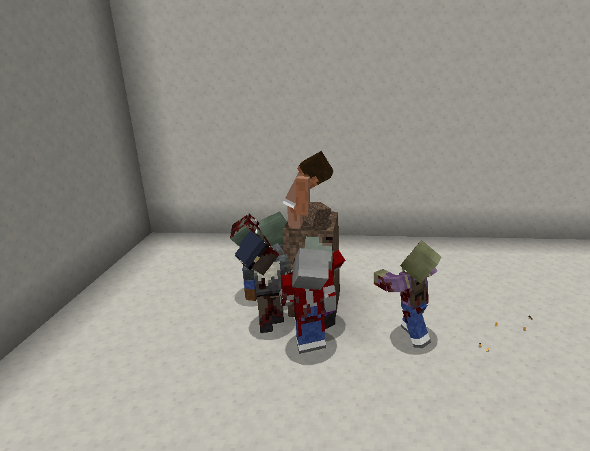
Quem te vê fora de alcance geme, chama os outros e cava.
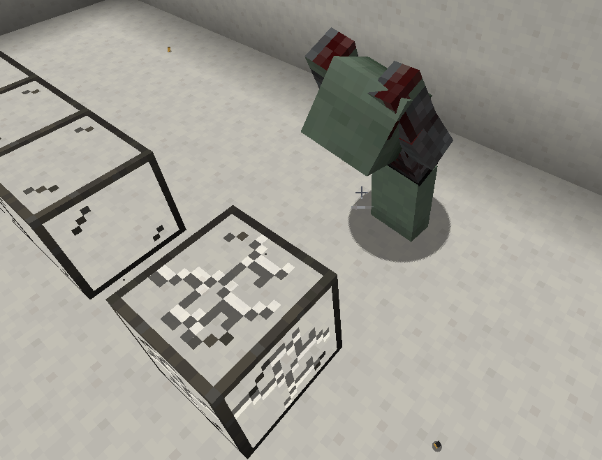
Escolhem o caminho mais fácil para entrar.
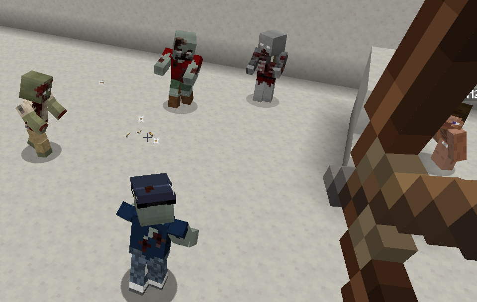
O som cai longe e a horda vai atrás.
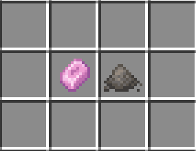
Sabão lava, cinzas encobrem, vísceras enganam a horda.
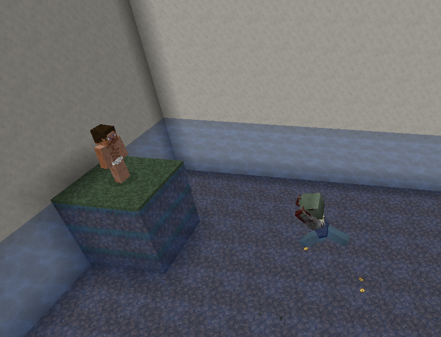
Perseguindo, entram na água e afundam atrás do alvo.
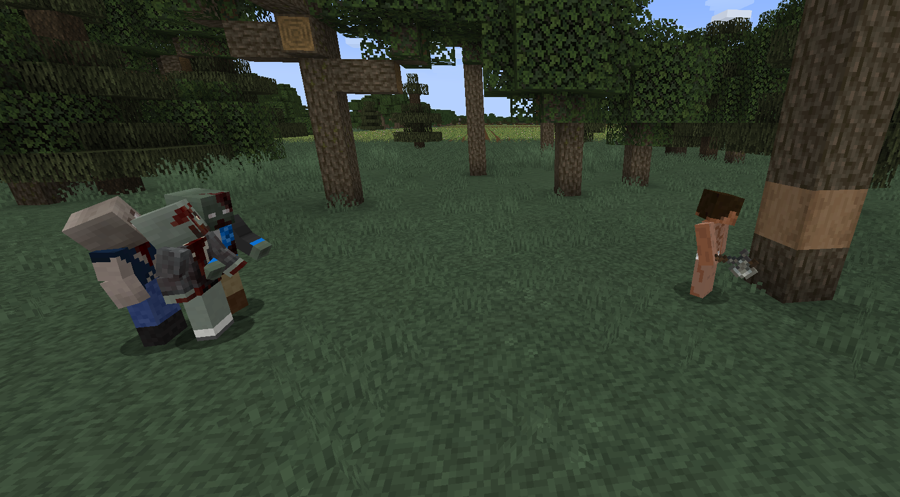
Minerar sem parar faz o som ir cada vez mais longe.
Cada um com um jeito de matar. A mistura muda conforme o bioma e o lugar.

A base da horda. Lento, mas nunca sozinho.

Rápido, e mais rápido ainda quando persegue.

Baixo e difícil de ver. Agarra o tornozelo.

Ao morrer estoura, dá náusea e chama a horda.
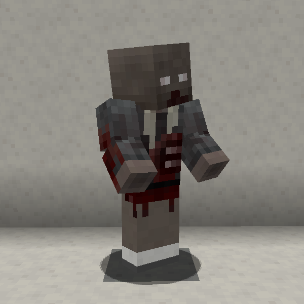
Maior, mais vida, empurra forte.

Policiais, militares e bombeiros. O uniforme protege.

Parado na neve até algo acordá-lo.
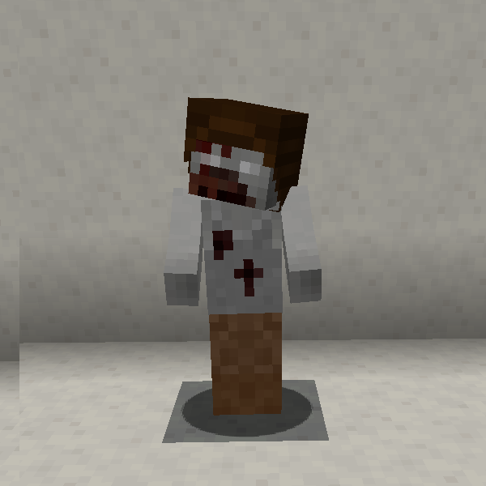
Ao te ver, grita e chama todos em volta.
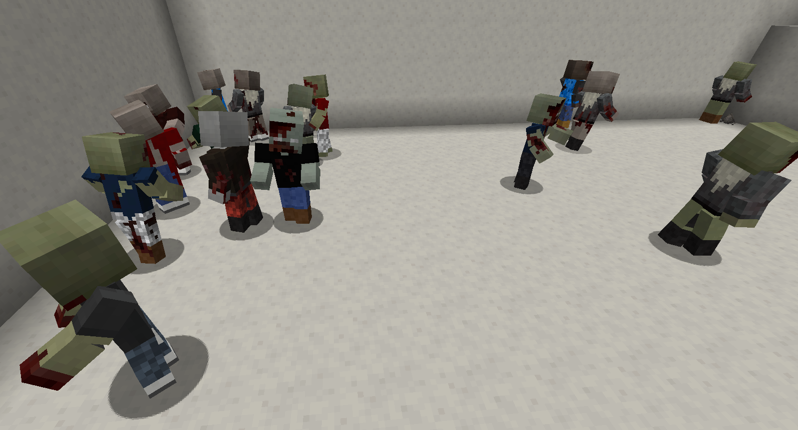
Pele, rosto, roupas, calçados e acessórios sorteados em camadas, com roupas rasgadas, sangue e sujeira. Corpos finos ou largos, alturas diferentes, uniformes e ternos que combinam. Apodrecem com os dias e têm animações próprias: andar cambaleante, corrida, rastejo, ajoelhar para comer, gritar.
Não existe barra de corações. Cada parte do corpo tem a própria vida, e onde você é atingido muda tudo.


Cabeça, tórax, abdômen, braços, mãos, pernas e pés. Um boneco discreto mostra seu estado por cores, e uma tecla abre o painel completo, também do corpo de outro jogador.

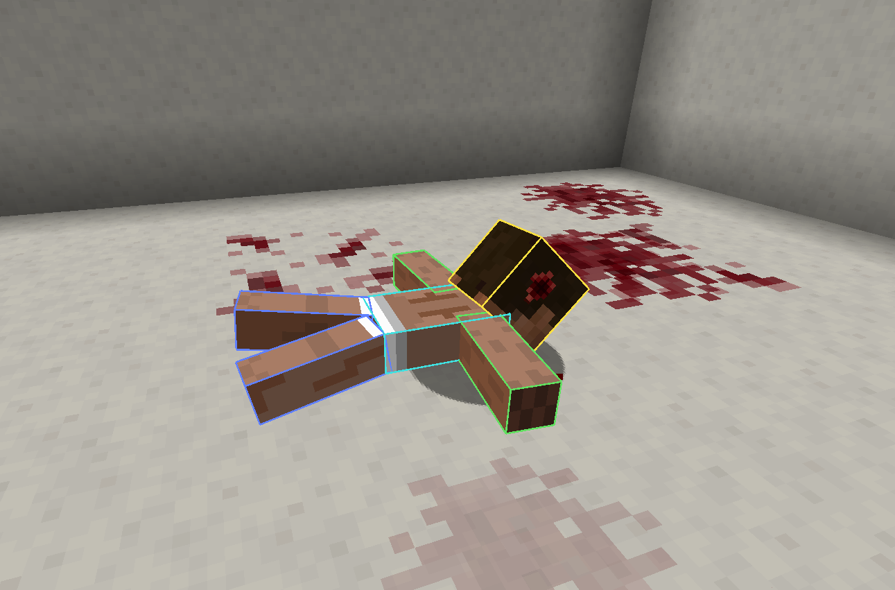
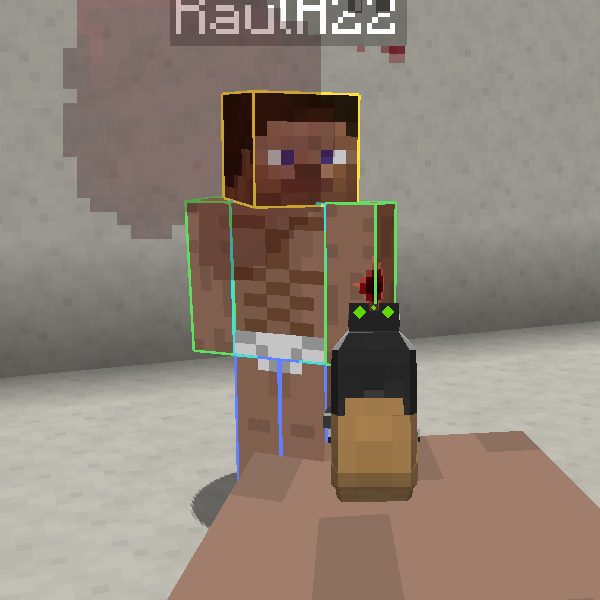
A área de acerto segue o corpo animado: braço levantado, agachado, deitado. Tiro entre as pernas erra; no braço estendido, acerta o braço. Vale para flechas, armas de fogo e corpo a corpo.
Mira e posição fazem diferença real num tiroteio.
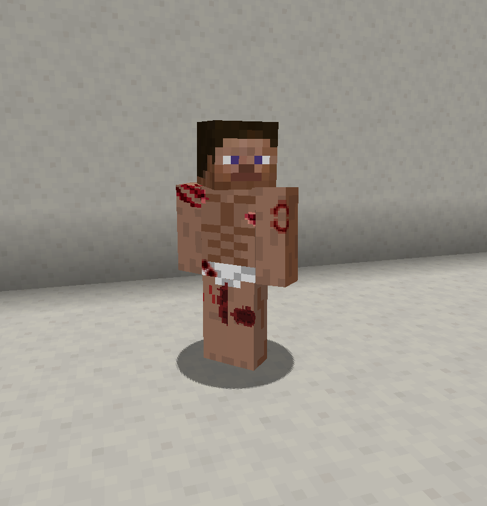


As feridas aparecem desenhadas na skin, no lugar exato do golpe, e mudam com o tempo. Só de olhar dá para saber o que aconteceu com alguém.


Ferida aberta sangra até ser tratada. Quem sangra deixa um rastro que gente e zumbi conseguem seguir. Pouco sangue escurece a tela e empalidece a pele.
O rastro entrega o fugitivo, ou leva o grupo até o amigo ferido.
Borra a visão, treme a câmera e zumbe o ouvido. Dor demais derruba; morfina corta.
Perna ferida manca e não corre; braço ferido treme a mira. No carro, perna quebrada não acelera.
O colete protege o peito, não a perna, e transforma um tiro em hematoma.
Cair não é morrer, e ninguém precisa ficar para trás. Médico é uma profissão de verdade dentro do servidor.


Quando o corpo não aguenta, você cai e começa uma contagem. Um aliado pode te reanimar com o desfibrilador, ou te pôr no ombro e tirar você do meio da horda.
Cada queda vira uma cena de resgate, com o tempo pressionando todo mundo.
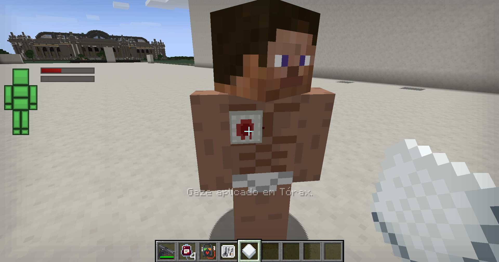

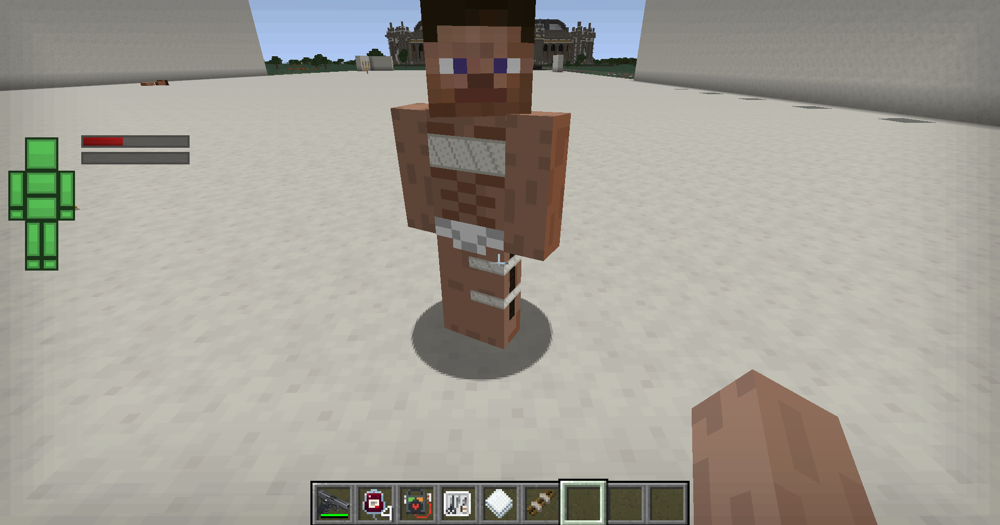
Tratar leva tempo: você mira a ferida e aplica o item, de pé ou ajoelhado ao lado do paciente. A ordem importa, e se alguém se mexer, perde.


Estetoscópio, termômetro, lanterna UV e examinador revelam pulso, respiração, febre e infecções escondidas. Ferida suja infecciona e piora por dias.
O médico descobre a infecção antes que seja tarde.

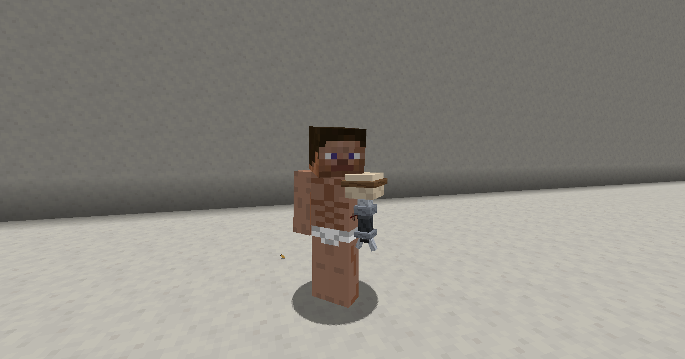
Mão, braço, pé ou perna podem ser amputados numa cirurgia de verdade: instrumento esterilizado, morfina para não desmaiar, coto que sangra. Depois de curado, o membro recebe uma prótese 3D.
Decisões difíceis, consequências permanentes.
Uma mordida não é só dano. É o começo de uma história que pode terminar com você do outro lado.
Zumbis agarram e mordem o que está mais perto: mãos, depois braços, depois tronco. Caído ou de costas, a chance sobe.
A mordida pode infectar. Febre, tremor, visão turva e desmaios avançam por quatro estágios.
Limpar logo reduz a chance. Antiviral cura no começo, torniquete atrasa, amputar o membro salva se for cedo.
No último estágio ele morre e levanta como zumbi, com a própria skin, o nome e a armadura. Os amigos vão ter que enfrentá-lo.
Mirar bem, escolher a arma e saber onde acertar. E nada some quando morre: os corpos ficam, apodrecem e alimentam a horda.
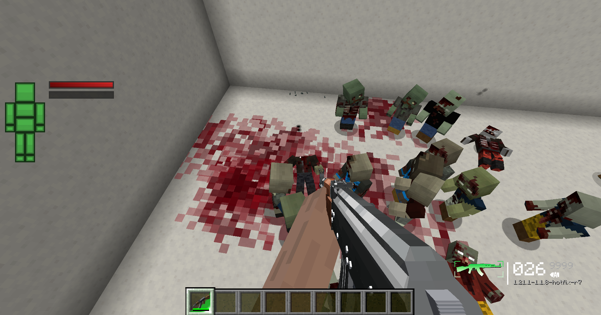
No corpo eles aguentam; na cabeça caem na hora. Calibre alto pode explodir a cabeça.
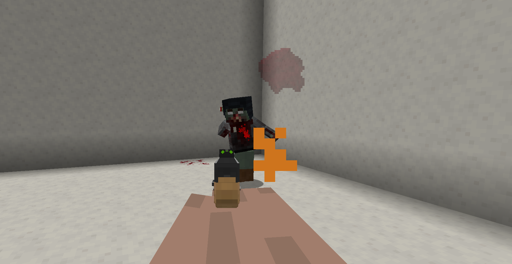
O ombro vai para trás e a cabeça dá um tranco, conforme o lado atingido.
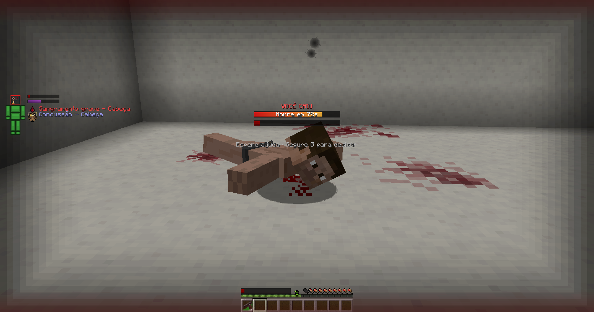
De costas se foi de frente, de bruços se foi pelas costas.
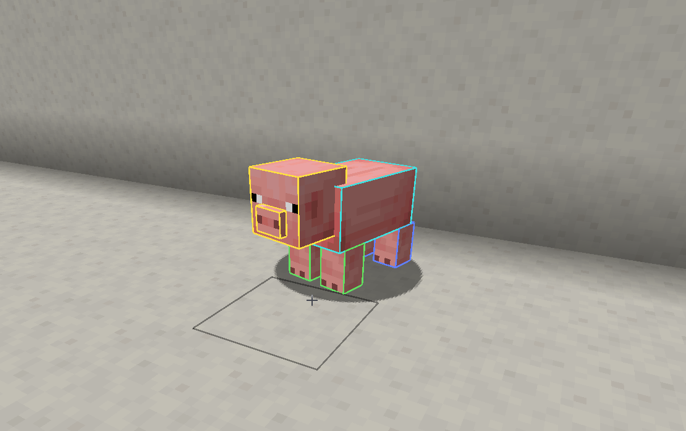
Área de acerto no formato do bicho. Tiro na cabeça dá o dobro de dano.
Sem pernas, rastejam; sem braços, só mordem.

Ajoelham e comem cadáveres frescos. Distraídos, viram oportunidade; animal morto vira isca.
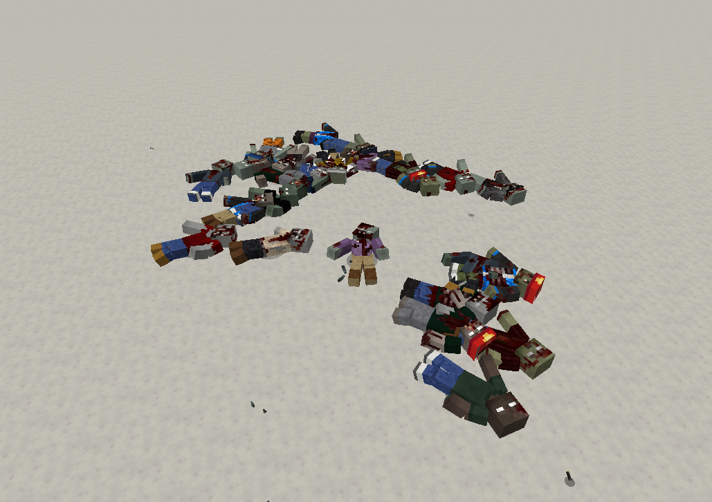
Mobs e jogadores deixam o corpo no chão, com os itens dentro.

Fresco, inchado, podre, ossada. Corpo fresco cheira e atrai mais.

Limpar os corpos em volta da base tira o cheiro que chama a horda.
Regiões perigosas e regiões calmas, outros sobreviventes disputando o que sobrou e um perigo que cresce a cada semana.
A cada semana de jogo, uma horda ataca do anoitecer ao amanhecer, maior a cada vez. Há aviso na véspera, e não dá para pular a noite dormindo.

Hospitais, delegacias, bases militares, postos e mercados mudam quantos zumbis aparecem e de que tipo.
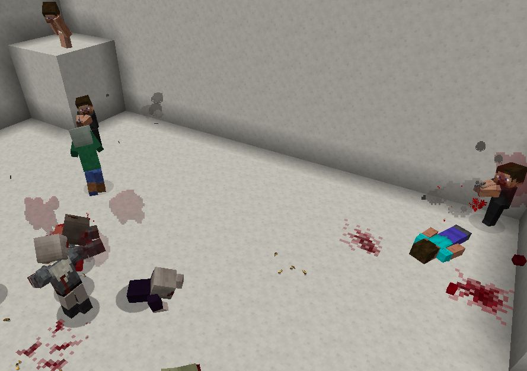
Civis, saqueadores e militares armados. Também podem ser mordidos.

Ataque um grupo e ele avisa, ameaça e depois atira à vista.
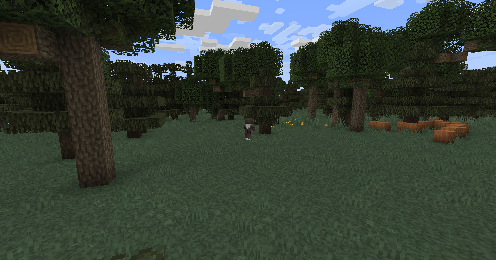
Floresta é mais calma, cidade é perigosa. Sem esqueletos nem creepers.

De pântanos a florestas densas, com estradas e cidades no meio.
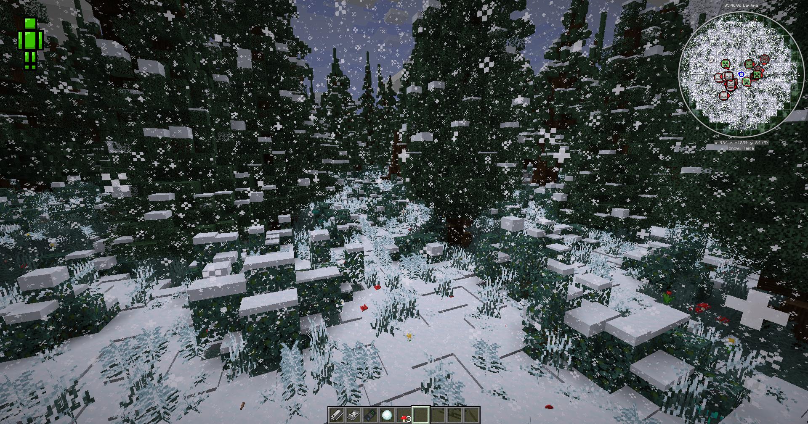
Estações mudam a paisagem e o que dá para plantar.

A cidade aparece lá longe, muito além do alcance normal.
Ursos, cervos, cobras e jacarés: uns fogem, outros caçam você.
Dezenas de receitas, panelas e plantações. Comida boa vira moeda.
Tiros ecoam em corredores e sons atrás de paredes chegam abafados.
Veículos de terra, mar e ar, armas reais e uma base para defender. Cada escolha tem custo: combustível, munição e barulho.

Motor, marchas, faróis e lugar para todos. A horda ouve o motor.
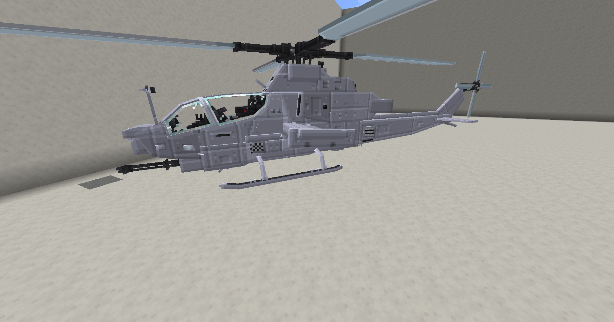
Para quem quer cruzar o mapa por cima da horda.

Rotas longas entre as regiões do mapa.

Força bruta para quem chegar à base militar.
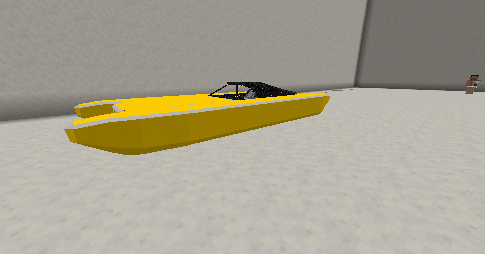
Rios e lagos viram rota de fuga. Zumbi não sobe em barco.
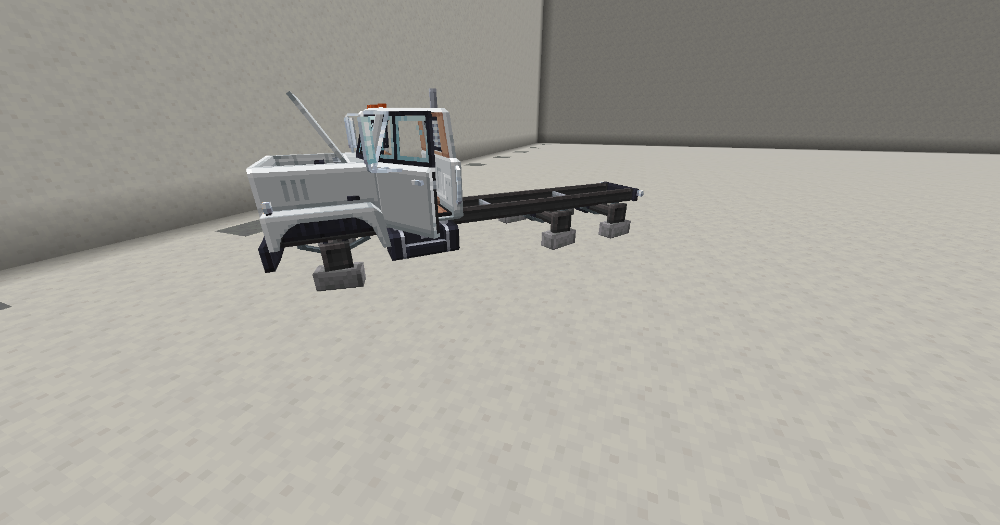
Transporte de suprimentos e do grupo inteiro.
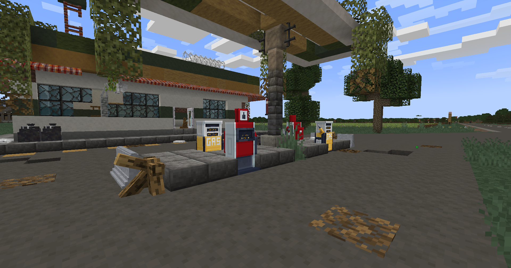
Postos e galões viram disputa entre grupos.
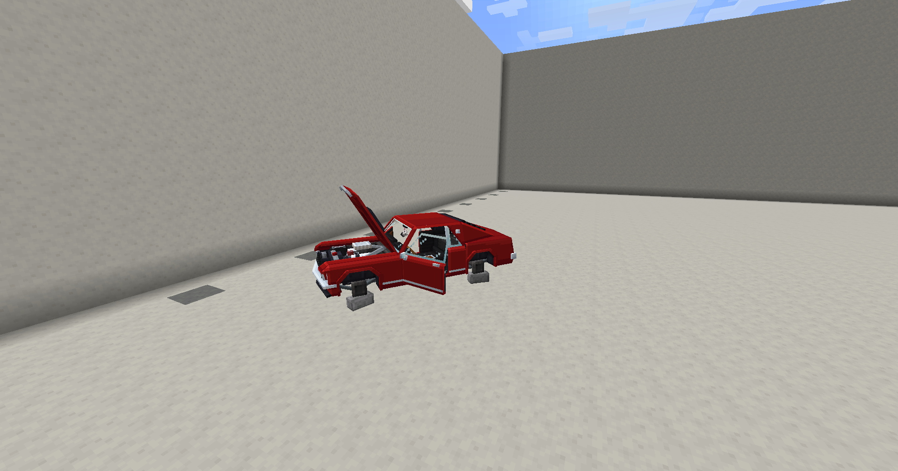
Rodas e motores se trocam e se consertam.
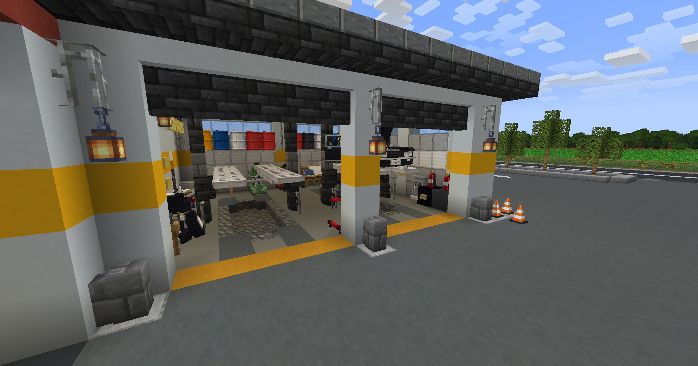
Um bom mecânico mantém o grupo andando.
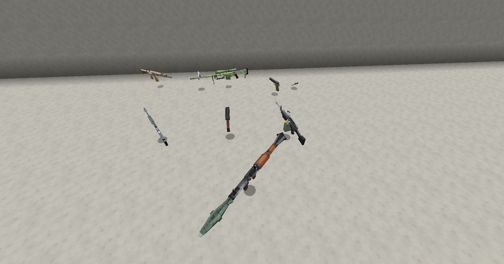
Pistolas, espingardas, submetralhadoras, fuzis, rifles de precisão e lançadores, com recuo, recarga e munição própria de cada calibre. Miras, lunetas, silenciadores e empunhaduras para montar a sua.

Reforce portas e janelas antes da noite da horda.

Móveis, armazéns e decoração para montar o seu refúgio.
Ajudam a segurar os muros, mas fazem barulho.
O que você carrega decide quanto tempo aguenta fora de casa.
Marcações compartilhadas com a sua equipe.
As mecânicas criam funções de verdade. O grupo depende de cada um, e é isso que faz os jogadores voltarem.
Diagnostica, trata, opera e reanima. Sem ele, o grupo não sobrevive à primeira horda.
Mantém veículos andando, troca peças e garante combustível.
Lê os sentidos dos zumbis para passar despercebido e abrir caminho.
Domina armas, calibres e barulho, e segura a linha na noite da horda.
Alimenta o grupo, conhece os animais e sabe onde mirar.
Ergue e fortifica a base, com barricadas onde a horda vai bater.
Comparamos os zumbis do servidor com os mods de zumbi mais conhecidos, olhando o que cada um realmente faz.
| Mecânica | LyriusZ | Zombie Awareness | Enhanced AI | Rotted | Eggs Zombies | Zombie Rool |
|---|---|---|---|---|---|---|
| Visão de verdadeEnxerga só à frente; escuro, chuva e agachar atrapalham | ✔ | Só distância | Só distância | — | — | — |
| Não vê através de paredesEsconder-se funciona | ✔ | Pode saber onde você está | Pode saber onde você está | — | — | — |
| Desconfia antes de atacarInvestiga, persegue, procura e desiste | ✔ | — | Só esquece depois de um tempo | — | — | — |
| Cada som tem seu alcancePassos, portas, vidro, tiros; lã abafa | ✔ | Sons com força igual | — | — | — | — |
| FaroCheiro de gente, trilha de sangue, comida e corpos | ✔ | Só sangue ao se machucar | — | — | — | — |
| Disfarçar o cheiroSabão, cinzas e vísceras de zumbi | ✔ | — | — | — | — | — |
| Zumbis comem os mortosAjoelham, comem e se distraem com cadáveres | ✔ | — | — | — | — | — |
| Horda força portas e janelasVidro cede rápido, porta aguenta mais | ✔ | — | Escava qualquer bloco | — | Só porta, com um tipo de zumbi | Só barreiras do mapa |
✔ completo · em amarelo, parcial · — não tem · comparação de novembro de 2026
O LyriusZ está em fase alpha e cresce a cada atualização. Novas mecânicas, zumbis, lugares e sistemas vão surgir conforme o desenvolvimento avança, testados pelos próprios jogadores do servidor.
Um apocalipse zumbi onde cada ferida conta uma história e cada noite da horda testa o grupo inteiro.